특수용접기능사 (2003-10-05 기출문제)
1과목: 용접일반
1. 습기가 있는 용접봉을 사용하면 다음과 같은 단점이 있다. 여기에 해당되지 않는 것은?
- 피복제가 벗겨지기 쉽고 아크가 불안정하다.
- 용착금속의 기계적 성질이 불량해진다.
- 용접기를 손상시킨다.
- 블로홀(blow hole)이 생긴다.
(정답률: 55%)

2. 아크 전압 30V, 아크 전류 300A, 무부하 전압 80V, 내부손실 4㎾일 때, 효율은 몇%인가?
- 55.3%
- 60.4%
- 69.2%
- 79.1%
(정답률: 47%)
3. 산소의 성질에 관한 설명으로 틀린 것은?
- 다른 물질의 연소를 돕는 조연성 기체이다.
- 아세틸렌과 혼합 연소시켜 용접 가스절단에 사용한다.
- 산소자체가 연소하는 성질이 있다.
- 무색, 무취, 무미의 기체이다.
(정답률: 72%)
4. 납땜법에 관한 설명으로 틀린 것은?
- 비철 금속의 접합도 가능하다.
- 재료에 수축현상이 없다.
- 땜납에는 연납과 경납이 있다.
- 모재를 녹여서 용접한다.
(정답률: 75%)
5. 아크전류 200[A], 아크전압 25[V], 용접속도 15[㎝/min]인 경우, 용접의 단위길이 1㎝당 발생하는 전기적 에너지(Energy)값은 몇 Joule/㎝인가?
- 15000
- 20000
- 25000
- 30000
(정답률: 49%)
6. 아크 에어 가우징(arc air gouging)시 연강재의 나비 10mm, 깊이 6mm정도의 홈을 가공할 때 다음 중 적당한 가우징의 속도는?
- 900mm/min
- 300mm/min
- 400mm/min
- 200mm/min
(정답률: 17%)
7. 산소 아세틸렌 가스 용접에서 주철에 사용하는 용제가 아닌 것은?
- 붕사
- 탄산 나트륨
- 중탄산 나트륨
- 염화 나트륨
(정답률: 43%)
8. 가스절단 토치 형식 중 동심형에 해당하는 형식은?
- 영국식
- 미국식
- 독일식
- 프랑스식
(정답률: 57%)
9. 용접법에 관한 설명으로 틀린 것은?
- 용기 제작에서 기밀성, 수밀성, 유밀성이 높다.
- 구조물의 중량 감소는 제작비가 줄어든다.
- 품질검사가 쉬우며 응력 집중이 없다.
- 로보트 용접의 등장으로 공정의 무인화가 가능하다.
(정답률: 59%)
10. 경납땜을 설명한 것 중 잘못된 것은?
- 용융점이 450℃ 보다 높다.
- 알루미늄용 경납의 용접은 600℃ 정도이다.
- 은납은 은, 구리, 아연이 주성분으로 된 합금이다.
- 경납용 용제로는 주로 염화아연(ZnCl2)을 사용한다.
(정답률: 38%)
11. 용접후 팽창과 수축에 의한 변형은 어떤 결함에 속하는가?
- 치수상의 결함
- 구조상의 결함
- 성질상의 결함
- 팽창상의 결함
(정답률: 43%)
12. 프랑스식 가스용접기에서, 팁번호 200번에 해당되는 설명은?
- 두께 20mm 연강판의 용접이 가능하다.
- 두께 20mm 알루미늄판의 용접이 가능하다.
- 표준 불꽃으로 1시간당 유출되는 아세틸렌 소비량이 200리터이다.
- 표준 불꽃으로 1분당 유출되는 아세틸렌 소비량이 200리터이다.
(정답률: 54%)
13. 피복아크 용접봉에서 피복제의 역할 설명 중 틀린 것은?
- 아크를 안정시킨다.
- 대기로 부터 용착금속을 보호한다.
- 용융금속의 탈산 정련 작용을 한다.
- 용착금속의 응고, 냉각속도를 빠르게 한다.
(정답률: 60%)
14. 피복아크의 용접회로가 알맞게 연결된 것은?
- 전원 - 전극케이블 - 용접봉 홀더 - 용접봉 - 모재 - 접지케이블 - 전원
- 전원 - 전극케이블 - 모재 - 용접봉 홀더 - 용접봉 - 접지케이블 - 전원
- 전원 - 접지케이블 - 용접봉 홀더 - 용접봉 - 모재 - 전극케이블 - 전원
- 전원 - 접지케이블 - 전극케이블 - 용접봉 홀더 - 모재 - 전원
(정답률: 65%)
15. 기체나 액체 연료를 토치나 버너로 연소시켜 그 불꽃을 이용하여 납땜하는 것은?
- 유도가열납땜
- 담금납땜
- 가스납땜
- 저항납땜
(정답률: 48%)
16. 맞대기용접에서 용접기호는 기선에 대하여 90도(°)의 평행선을 그리어 나타내며, 얇은 판에 많이 사용되는 홈의 용접은?
- V형 용접
- I형 용접
- X형 용접
- H형 용접
(정답률: 40%)
17. 가스절단에서 재료두께가 25mm 일 때 표준 드래그의 길이는 다음 중 몇 mm 정도인가?
- 10
- 8
- 5
- 2
(정답률: 50%)
18. 용해 아세틸렌용기를 취급할 때의 주의사항으로 틀린 것은?
- 충격을 가해서는 안 된다.
- 화기 가까이 설치해서는 안 된다.
- 반듯이 세워서 사용한다.
- 소금물로 누설검사를 한다.
(정답률: 68%)
19. 가스절단 작업 중 절단면의 윗 모서리가 녹아 둥글게 되는 현상이 생기는 원인과 거리가 먼 것은?
- 팁과 강판사이의 거리가 가까울 때
- 절단가스의 순도가 높을 때
- 예열불꽃이 너무 강할 때
- 절단속도가 느릴 때
(정답률: 34%)
20. 직류 아크용접에서 맨(bare) 용접봉을 사용했을 때 심하게 일어나는 현상으로 용접 중에 아크가 한쪽으로 쏠리는 현상을 무엇이라고 하는가?
- 언더컷(undercut)
- 자기불림(magnetic blow)
- 오버랩(overlap)
- 기공(blow hole)
(정답률: 55%)
21. 기밀, 수밀을 필요로 하는 탱크의 용접이나 배관용 탄소강관의 용접에 가장 적합한 접합법은?
- 심 용접(seam welding)
- 스폿 용접(spot welding)
- 업셋 용접(upset welding)
- 플래시 용접(flash welding)
(정답률: 42%)
22. 아크 용접에서 아크 쏠림의 방지 대책 중 틀린 것은?
- 용접봉 끝을 아크 쏠림 방향으로 기울일 것.
- 접지점을 용접부에서 멀리할 것.
- 직류 아크 용접을 하지 말고 교류용접을 할 것.
- 접지점 두개를 연결할 것.
(정답률: 62%)
23. 교류 아크 용접기 부속장치 중 핫 스타트(Hot start) 장치를 사용했을 때 이점이 아닌 것은?
- 용락을 방지한다.
- 비드 모양을 개선한다.
- 아크 발생을 쉽게 한다.
- 아크 발생초기의 비드 용입을 양호하게 한다.
(정답률: 35%)
24. 표준불꽃이라고도 부르며 보통은 정상불꽃으로 가스용접작업이 이루어진다 이런형태의 불꽃을 무슨 불꽃이라 하나?
- 탄화불꽃
- 중성불꽃
- 산화불꽃
- 화염불꽃
(정답률: 34%)
25. 순수한 아세틸렌가스의 성질로 옳지 않은 것은?
- 무색 무취의 기체이다.
- 공기보다 무겁다.
- 각종 액체에 잘 용해된다.
- 산소와 적당히 혼합하면 높은 열을 낸다.
(정답률: 46%)
26. 금속 아크 절단법에 대한 설명이다. 틀린 것은?
- 전원은 직류 정극성이 적합하다.
- 피복제는 발열량이 적고 탄화성이 풍부하다.
- 절단면은 가스절단면에 비하여 대단히 거칠다.
- 담금질 경화성이 강한 재료의 절단부는 기계가공이 곤란하다.
(정답률: 24%)
27. 아크에어 가우징 장치가 아닌 것은?
- 가우징 토치
- 가우징봉
- 압축공기
- 열교환기
(정답률: 55%)
28. 다음의 그림은 다층 용접을 할 때 중앙에서 비드를 쌓아 올리면서 좌우로 진행하는 방법이다. 무슨 용착법인가?
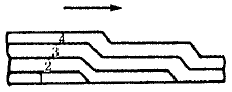
- 빌드업법
- 케스케이드법
- 전진블럭법
- 스킵법
(정답률: 45%)
29. 다음 중 연납땜의 성분을 나타 내는 것은?
- Sn+Pb
- Zn+Pb
- Cu+Pb
- Al+Pb
(정답률: 30%)
30. 용접부의 완성검사에 사용되는 비파괴 시험이 아닌 것은?
- 방사선 투과시험
- 형광침투시험
- 자기탐상법
- 현미경조직시험
(정답률: 23%)
31. B급 화재는 어느 경우의 화재인가?
- 일반화재
- 유류화재
- 전기화재
- 금속화재
(정답률: 55%)
32. 용접부의 시험법 중 기계적 시험법이 아닌 것은?
- 굽힘 시험
- 경도 시험
- 인장 시험
- 부식 시험
(정답률: 66%)
33. 주철의 보수용접방법에 해당되지 않는 것은
- 스터드법
- 비녀장법
- 버터링법
- 백킹법
(정답률: 33%)
34. 불활성 가스 아크용접에 주로 사용되는 가스는?
- CO2
- Ce
- Ar
- C2H2
(정답률: 67%)
35. 다음은 용접이음에 대한 설명이다. 옳지 않은 것은?
- 변형이 없도록 용접순서를 결정한다.
- 용접선은 가능한 교차해서 튼튼하게 용접한다.
- 필렛 용접은 가능한 피하고 맞대기 용접을 하도록 한다.
- 용입부족이 생기지 않도록 이음형상 선택에 신중을 기한다.
(정답률: 0%)
2과목: 용접재료
36. 탄소강의 청열메짐(blue-shortness)의 온도는?
- 900℃ 이상
- 50 - 80℃
- 100 – 200℃
- 200 - 300℃
(정답률: 38%)
37. 보통 주철의 인장강도는 다음 중 어느 것인가?
- 12 ∼ 20kgf/mm2
- 20 ∼ 30kgf/mm2
- 30 ∼ 40kgf/mm2
- 40 ∼ 50kgf/mm2
(정답률: 18%)
38. 마우러의 조직도(Maurer's diagram)를 올바르게 설명한 것은?
- 탄소와 흑연량에 따른 주철의 조직관계를 표시한 것
- 탄소와 시멘타이트량에 따른 주철의 조직관계를 표시한 것
- 규소와 망간량에 따른 주철의 조직관계를 표시한 것
- 탄소와 규소량에 따른 주철의 조직관계를 표시한 것
(정답률: 28%)
39. 주철은 함유하는 탄소의 상태와 파단면의 색에 따라 3종으로 분류되는 데 다음 중 아닌 것은?
- 회주철(gray cast iron)
- 백주철(white cast iron)
- 반주철(mottled cast iron)
- 합금주철(alloyed cast iron)
(정답률: 30%)
40. 뜨임 시효 경화성이 있어서 내식성, 내열성, 내피로성 등이 우수하여 베어링이나 고급 스프링에 이용되며, 구리에 2∼3%의 Be을 첨가한 청동 합금은?
- 콜슨(corson)합금
- 암즈 청동(arms bronze)
- 베릴륨 청동(beryllium bronze)
- 에버듀(everdur)
(정답률: 48%)
41. 구리에 관한 설명으로 틀린 것은?
- 전기 및 열의 전도율이 높은 편이다.
- 전연성이 매우 크므로 상온가공이 매우 용이하다.
- 건조한 공기 중에 산화된다.
- 철강보다 내식성이 우수하다.
(정답률: 46%)
42. 구상 흑연 주철에 유해한 성분이 아닌 것은?
- 주석
- 납
- 구리
- 비스무드
(정답률: 12%)
43. 자기 감응도가 크고, 잔류자기 및 항자력이 작으므로, 변압기의 철심이나 교류기계의 철심등에 쓰이는 강은?
- 텅스텐강
- 코발트강
- 규소강
- 크롬강
(정답률: 7%)
44. 티탄과 그 합금에 관한 설명으로 틀린 것은?
- 티탄은 비중에 비해서 강도가 크며, 고온에서 내식성이 좋다.
- 티탄에 Mo, V 등을 첨가하면 내식성이 더욱 향상된다.
- 티탄 합금은 인장강도가 작고, 또 고온에서 크리프(creep)한계가 낮다.
- 티탄은 가스 터빈 재료로서 사용된다.
(정답률: 50%)
45. 베어링 합금의 필요 조건과 상반되는 것은?
- 하중에 견딜 수 있는 경도와 내압력을 가질 것.
- 충분한 점성과 인성이 있을 것.
- 주조성이 좋고 열전도율이 클 것.
- 마찰계수가 크고, 저항력이 작을 것.
(정답률: 42%)
46. 알루미늄 표면에 황금색 경질 피막을 형성하기 위하여 실시하는 방식법은?
- 수산법
- 황산법
- 통산법
- 크롬산법
(정답률: 31%)
47. 용접부에 주상조직은 어떤 경우에 생기는가?
- 단층 용접으로 용착량이 많을 때
- 다층으로 용접할 때
- 용접시 예열과 후열을 할 때
- 다층용접 후 서냉할 때
(정답률: 24%)
48. 18-8 스테인레스강의 대표적인 조성 성분은?
- Ni – Mn
- Cr - W
- Cr – Ni
- W - V
(정답률: 42%)
49. 주물용 알루미늄 합금으로 기계적 성질이 우수하여 단조품, 피스톤, 실린더 헤드 등과 같은 내열 기관의 고온 부품에 사용되고 Cu(4%), Ni(2%), Mg(1.5%)이 함유된 합금은?
- Y합금
- 실루민
- 라우탈
- 알민
(정답률: 43%)
50. 금속재료의 인성(toughness)의 척도를 나타내는 것은?
- 인장강도
- 피로한도
- 충격치
- 전단강도
(정답률: 6%)
3과목: 기계제도
51. 도면의 표제란이나 그림 부근에 표시된 NS 의 의미는?
- 나사를 표시
- 비례척이 아닌 것를 표시
- 각도를 표시
- 보통나사를 표시
(정답률: 59%)
52. 다음 중 물체의 일부분의 생략 또는 단면의 경계를 나타내는 선으로 불규칙한 파형의 가는실선인 것은?
- 파단선
- 지시선
- 가상선
- 절단선
(정답률: 41%)
53. 회전도시 단면도에 관한 설명으로 올바른 것은?
- 암 및 림, 훅 등은 절단면에 90° 를 회전하여 도시하여도 좋다.
- 절단선의 연장선 위에 굵은 1점 쇄선 또는 가는1점 쇄선으로 그린다.
- 절단할 곳의 전· 후를 끊어서 그 사이에 가는 실선으로 그린다.
- 도형 내의 절단한 곳에 겹쳐서 가상선으로 그린다.
(정답률: 45%)
54. 기계제도에서 치수의 기입의 원칙 설명으로 틀린 것은?
- 치수는 중복 기입을 피한다.
- 치수는 되도록 주투상도에 집중한다.
- 치수의 단위는 cm를 기준으로 하며 cm의 단위는 기입하지 않는다.
- 도면에 나타난 치수는 특별히 명시하지 없는 한, 그 도면에 도시된 대상물의 다듬질치수를 표시한다.
(정답률: 52%)
55. 보기 입체도를 제3각법으로 투상한 도면에 대한 설명으로 가장 적합한 것은?
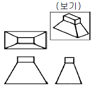
- 정면도 만 틀림
- 평면도 만 맞음
- 우측면도 만 맞음
- 모두 맞음
(정답률: 60%)
56. 도면에 SS 330 으로 표시된 기계재료의 의미로 다음 중 가장 적합한 설명은?
- 합금 공구강으로, 최저인장강도는 330kgf/cm2
- 일반구조용 압연강재로, 최저인장강도는 330N/mm2
- 열간압연 스테인레스 강관으로, 탄소 함유량은 0.33%
- 압력배관용 탄소강재로, 탄소 함유량은 0.33%
(정답률: 47%)
57. 다음의 도면에서 "A" 의 길이는 얼마인가?
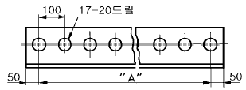
- A = 1500 mm
- A = 1600 mm
- A = 1700 mm
- A = 1800 mm
(정답률: 29%)
58. 온 둘레 현장 용접의 용접 보조 기호는?
- ○
- ●
- ⊙
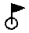
(정답률: 35%)
59. 다음 배관 도시기호 중 체크밸브는 어느 것인가?
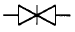
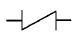
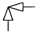
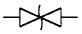
(정답률: 41%)
60. 보기 입체도의 화살표 방향 투상이 정면도일 때 우측면도로 가장 적합한 것은?
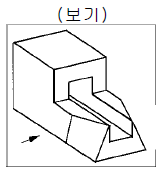
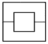
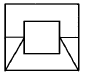
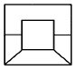
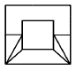
(정답률: 41%)